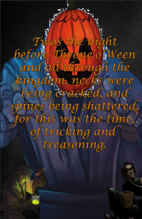

What would this mean for ToL? What is Throne’o’ween?
Well, I’m glad you asked- basically it’s ToL’s version of Halloween, or All Hallows Eve. During which time Castle Adiart is decorated with pumpkins and jackolanterns, and all that kind of stuff.
Decorated? Why would a kingdom back then be decorated? Well, actually- did you know jackolanterns were used to ward off evil spirits? looks towards the ToL cemetery. Because during Halloween (Throne’o’ween), darkness was at it’s greatest power. The ghosts would rise, and haunt. and so the townsfolk put jackolanterns around the kingdom and it stopped. Bye ghosts  stay in the cemetery where you belong
stay in the cemetery where you belong 
It would also, in my opinion just be cool to have these sorts of events once in a while. Keeping the community involved and active. Perhaps this would be a great time, for maybe 2 days, the day before and the day of Halloween to do a 2x GP boost or something of that sort, to bring everyone online and together. Heck, I was even thinking of something kind of cool but it might be impossible to do, maybe a Halloween outfit that would be sold for a limited time in the store, like a seasonal outfit. Only purchasable during Halloween-time, but not just this year- next year and so on, seasonal. The outfit I was thinking would have a jackolantern as the head and a viney-sort of body, hey! We need more cool armor! We have these awesome weapons, but somewhat bland outfits  and this shouldn’t just be limited to Halloween! Maybe during like Christmas time Santa outfits, and maybe elf outfits could be sold seasonally too!
and this shouldn’t just be limited to Halloween! Maybe during like Christmas time Santa outfits, and maybe elf outfits could be sold seasonally too!  but yeah, what do you think- Halloween in ToL? Any ways you can think of to make this a better suggestion? Let me know below in the comments section, thanks for your time reading this, and as always- stay frosty my friends.
but yeah, what do you think- Halloween in ToL? Any ways you can think of to make this a better suggestion? Let me know below in the comments section, thanks for your time reading this, and as always- stay frosty my friends.
and yes, this may be hard to implement this year on such short notice, but maybe it would be something cool for next year.